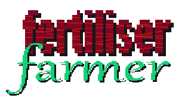

bytemunchdotdev slashprojects
theme toggle
fertiliser farmer
a mobile merging game based on literal shit
what's this?
my better half has a crippling merge game addiction. i made this out of disdain for the genre. there was intention to flesh this out but the joke got old and my passion for manure-based tile merging games kinda died.
designed for mobile.